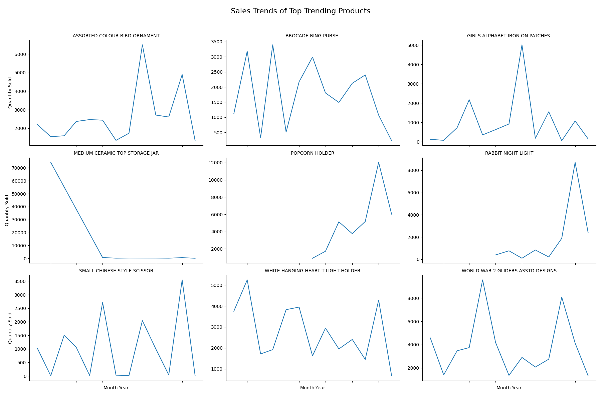

Customer Behavior Analysis in Retail Transactions

Introduction
In the era of e-commerce, understanding customer behavior is crucial for businesses to optimize their strategies and improve customer satisfaction. In this blog post, we will explore insights derived from the "Online Retail Transaction" dataset. This dataset includes information on transactions made by customers through an online retail platform, capturing details such as products purchased, quantities, transaction dates, prices, customer IDs, and customer locations. By analyzing this data, we aim to uncover patterns and trends that can inform business decisions.
The dataset was taken from Kaggle and can be found here.
Dataset Overview
The dataset contains the following columns along with their descriptions:
| Column | Description |
|---|---|
| StockCode | A code used to identify the product. |
| Description | A brief description of the product. |
| Quantity | The quantity of the product purchased. |
| InvoiceDate | The date and time of the purchase. |
| UnitPrice | The price per unit of the product. |
| CustomerID | The unique identifier for each customer. |
| Country | The country where the customer is located. |
Data Cleaning and Preprocessing
Before diving into the analysis, we performed several data cleaning steps:
- Removed records with non-positive unit prices.
- Focused on transactions within the United Kingdom to narrow the scope of our analysis.
Exploratory Data Analysis
Transaction Classification
We classified transactions as "Bought" or "Returned" based on the quantity:
- Positive quantities represent purchases.
- Negative quantities represent returns.
Transaction Types
The bar chart below compares the number of items bought versus the number of items returned.
Key Point: The low return rate indicates customer satisfaction and effective product quality. This metric can be used to gauge overall customer satisfaction and product performance.
Time of Day Distribution
This bar chart shows the distribution of transactions across different times of the day: Morning, Noon, Afternoon, and Evening.
Key Point: Most transactions occur in the Afternoon, indicating peak business activity during this period.
Top Products
This bar chart shows the top products based on the number of transactions. The bar chart also includes unit prices along with product names inside the bar.
Key Point: Most top selling items look to be either decorative pieces or maybe gift items. Understanding the top-selling products can help in inventory management and targeted promotions for these popular items. Majority of the items are below $5.
Word Cloud of Product Descriptions
This word cloud visualizes the most common words in the product descriptions.
Key Point: The word cloud highlights popular themes and products in the inventory, which can inform marketing strategies and inventory decisions.
Sales Trends of Top Trending Products (Percentage Growth)
With the advent of social media, influencer-based marketing has created numerous opportunities for products to go viral, significantly enhancing brand visibility. By identifying top trending products throughout the year, we can pinpoint which items gained viral popularity and understand the impact of influencer marketing on consumer behavior.The grid of line charts shows the percentage sales growth of the top trending products over time.
- Objective: Find products with significant month-over-month sales growth.
- Method: Analyzed monthly sales quantities for each product. Calculated month-over-month growth by comparing current month sales with previous month sales. Determined trending products based on significant positive sales growth. Visualized sales trends using line plots to identify and showcase the products with notable growth over time.

Key Point: The chart reveals how certain products have experienced significant spikes in sales growth, indicating periods of high demand or successful marketing efforts.
Sales Trends of Top Trending Products (Quantity Sold)
The same analysis can also be shown in terms of absolute quantity sold over time, although the products remain same, we can see the trend change over time when we focus on raw quantities rather than growth percentages.
Key Point: The trends in quantity sold help in understanding the sales cycles of top products, which can inform production planning and stock management.
Identifying Potential Commercial Customers
With the rise of dropshipping, there has been a significant increase in the number of individuals acting as resellers. These individuals, whom we refer to as commercial customers, play a crucial role in the retail ecosystem. In the following analysis, we delve into the data to identify potential customers who are likely engaged in commercial selling. By recognizing these key players, businesses can tailor their strategies to better serve and support this growing segment of the market. The grid of line charts shows the monthly purchase quantities for the top 25 potential commercial customers.
- Objective: Recognize customers likely engaged in commercial selling.
- Method:
- Analyzed purchase volumes, transaction frequency, and total spending:
- Purchase Volume: Identified customers with quantities exceeding a threshold (e.g., 1000 units).
- Transaction Frequency: Identified customers with a high number of unique transactions (e.g., more than 20 transactions).
- Total Spending: Calculated total spending per customer and identified those exceeding a financial threshold (e.g., $10,000).
- Combined these metrics to filter out potential commercial customers.
- Visualized monthly purchase quantities for these customers using line plots to highlight their purchasing patterns over time.
- Analyzed purchase volumes, transaction frequency, and total spending:
Key Point: These trends can help identify key commercial customers and focus on building stronger relationships with them to drive further growth.
Finding Booming Businesses among Commercial Customers
Next, we aim to identify which customers have successfully gained market share in their respective businesses. By focusing on booming customers, we can pinpoint those who have demonstrated significant growth and expansion. Understanding these thriving customers is essential because it allows businesses to analyze the factors contributing to their success. This insight can then be leveraged to develop targeted strategies, provide tailored support, and foster stronger business relationships. Additionally, recognizing booming customers helps in identifying emerging market trends and potential opportunities for collaboration or investment.The grid of line charts shows the monthly purchase quantities for the top 25 customers whose businesses are booming.
- Objective: Determine customers gaining market share.
- Method:
- Calculated the slope of the trend line for each customer’s monthly purchase data:
- Extracted month-year from transaction dates.
- Grouped data by customer and month-year to aggregate monthly purchases.
- Applied linear regression to each customer's data to calculate the trend slope.
- Identified customers with positive slopes indicating growth.
- Visualized these booming customers using line plots to showcase their increasing transaction trends.
- Calculated the slope of the trend line for each customer’s monthly purchase data:
Key Point: These trends highlight successful customers, allowing businesses to learn from their behavior and potentially replicate their success with other customers.
Commercial Customers with Declining Transactions
We also identify businesses experiencing a decline in transaction count, signaling potential long-term challenges. Recognizing these declining customers is essential as it allows businesses to address underlying issues, implement corrective measures, and potentially turn around their performance. Early identification of these trends helps in mitigating risks, reallocating resources effectively, and maintaining a healthy and balanced customer portfolio.The grid of line charts shows the monthly purchase quantities for the top 25 customers who have experienced the longest and most significant declines in their purchasing behavior.
- Objective: Detect customers experiencing a decline in transactions.
- Method:
- Analyzed month-over-month percentage changes in purchase quantities:
- Aggregated monthly purchase quantities for each customer.
- Calculated the percentage change between consecutive months.
- Identified customers with significant negative trends by assessing the duration and magnitude of declines:
- Detected consecutive negative percentage changes to identify sustained declines.
- Ranked customers based on the longest and most severe declines(used log of quantities to calculate decline magnitude).
- Visualized these declining customers using line plots to highlight their decreasing transaction patterns.
- Analyzed month-over-month percentage changes in purchase quantities:
Key Point: The decline trends in these charts can help identify at-risk customers and develop targeted retention strategies to prevent further churn.
Conclusion
Through detailed analysis of retail customer behavior, we have gained valuable insights into transaction patterns, peak purchasing times, top products, and key customer segments. By leveraging these insights, businesses can enhance their marketing strategies, optimize inventory, and improve overall customer satisfaction. Identifying trending products helps in capitalizing on viral marketing opportunities, while recognizing booming and declining customers allows for targeted support and retention strategies. Understanding potential commercial customers also opens new avenues for growth and collaboration. These data-driven decisions are essential for staying competitive in today's dynamic retail landscape.
The full code for the analysis can be found here: here.